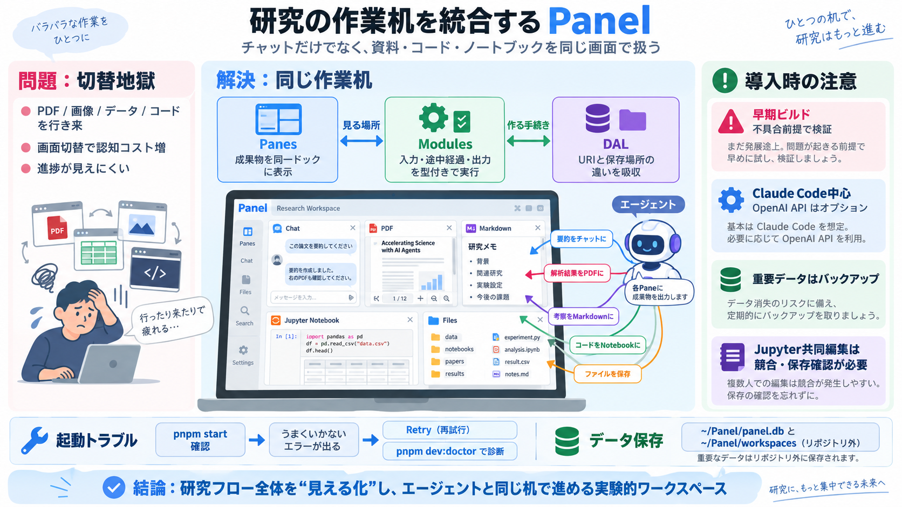

Software Application Layers And Responsibilities
That said, let's look at each layer. Because I am still forming all of these thoughts in my head, I'm going to write mos…

That said, let's look at each layer. Because I am still forming all of these thoughts in my head, I'm going to write mos…
If your system is made of multiple components, they need a way to communicate, which may be as simple as in-process meth…
## 5. Data Access Layer (Persistence Layer): `handles data storage and retrieval` `CRUD` `SQL` `NoSQL` ## How Does …
for building robust web applications. C#: A programming language mainly used with the .NET framework. .Net: A framework …
## Company Information. # SWS Panel Information. Work smarter and faster with SWS Panel and Truss. We provide innovative…